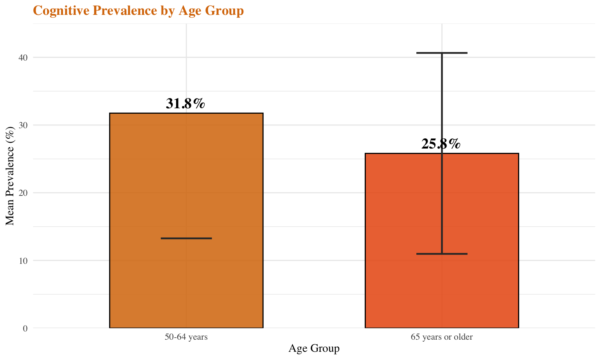
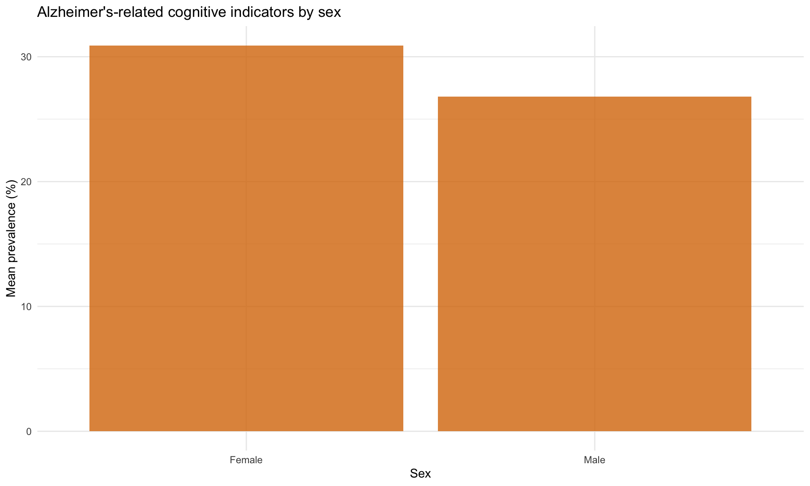
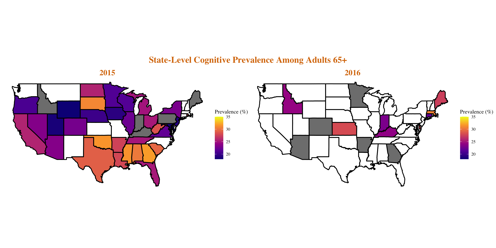
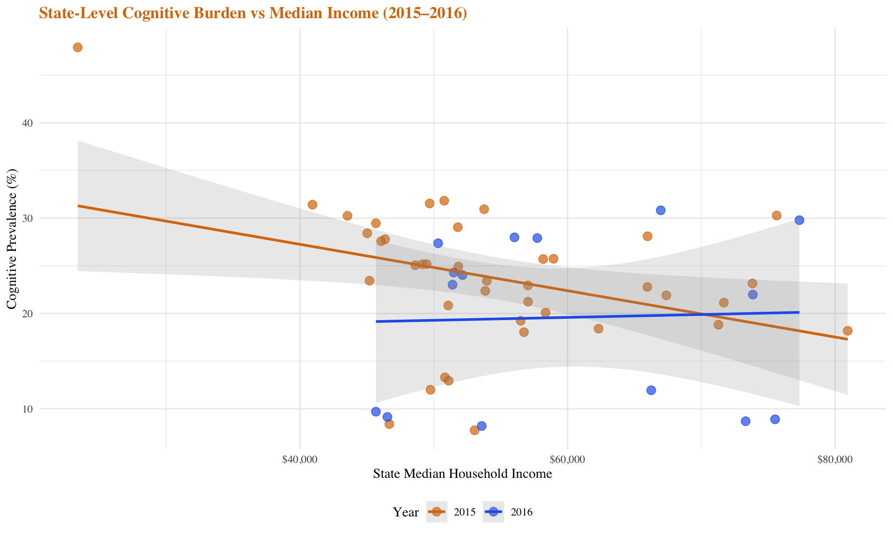
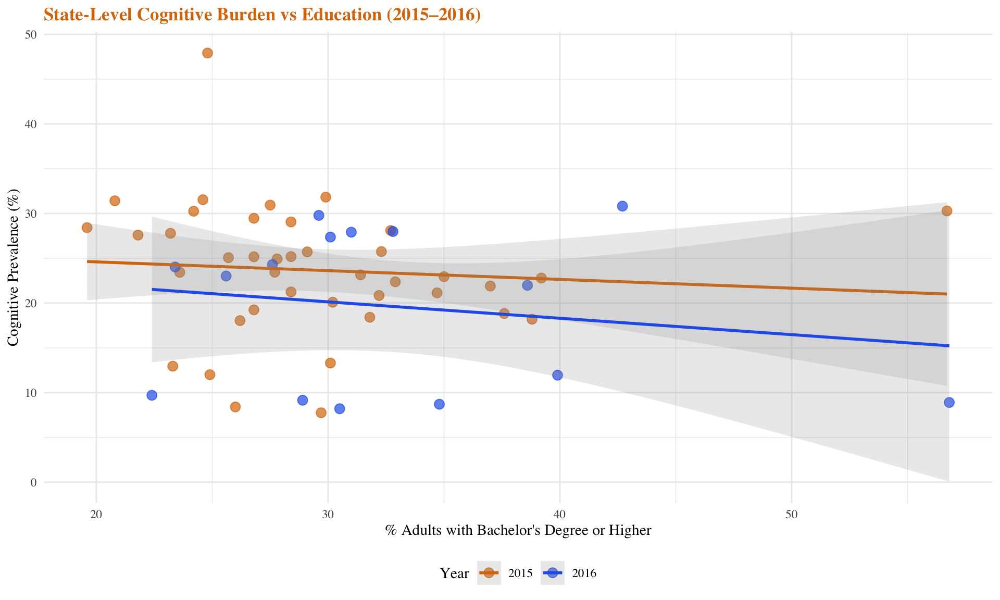
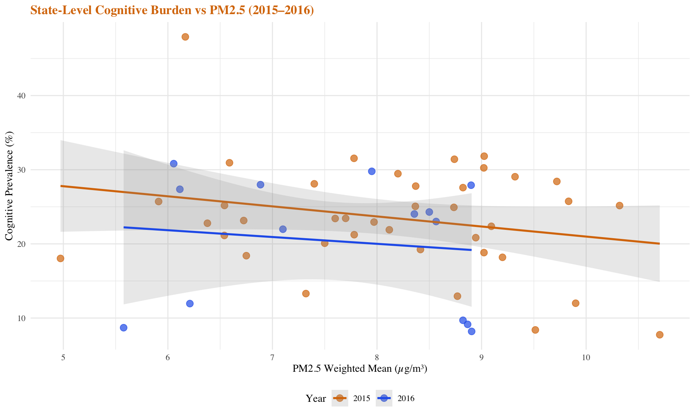

Introduction
Motivation
Alzheimer’s disease (AD) is one of the leading causes of death among older adults in the United States and a growing public health challenge as the population ages. According to the Alzheimer’s Association, approximately 7.2 million Americans aged 65 or above are projected to be living with Alzheimer’s in 2025, a number expected to rise significantly in coming decades. Understanding how Alzheimer’s mortality and self-reported cognitive decline vary across states—and how these patterns relate to social, environmental, and health factors—can inform prevention and policy efforts.
This report explores temporal and geographic trends in Alzheimer’s disease-related cognitive decline prevalence from 2015 to 2022 and examines how these are associated with contextual factors such as income, education level, and air quality.
Research Questions
- How does Alzheimer’s-related cognitive prevalence vary across U.S. states and over time?
- Are there demographic differences (age, sex) in cognitive decline prevalence?
- What is the association between state-level socioeconomic factors (income, education) and cognitive burden?
- Is air pollution (PM2.5) associated with cognitive decline at the ecological level?
Data and Methods
Data Sources
# Load Alzheimer's data
raw_az_data <- read.csv("data/2015-2022 Alzheimer Data.csv") |>
janitor::clean_names()
raw_az_data <- raw_az_data[-nrow(raw_az_data), ]
az_clean <- raw_az_data |>
filter(
!is.na(data_value),
!is.na(year_start),
!is.na(location_abbr)
)
# Filter for cognitive decline/impairment
az_cog <- az_clean |>
filter(
str_detect(topic, regex("cognitive decline|cognitive impairment",
ignore_case = TRUE))
)
# Create base summary with age and sex groups
az_cog_summary_base <- az_cog |>
mutate(
age_group = case_when(
stratification_category1 == "Age Group" ~ stratification1,
TRUE ~ "Overall"
),
sex_group = case_when(
stratification_category2 == "Sex" ~ stratification2,
TRUE ~ "Overall"
)
)
# Filter for 65+ overall
az_cog_65_overall <- az_cog_summary_base |>
filter(
age_group == "65 years or older",
sex_group == "Overall"
)
# State-year level data
az_state_year <- az_cog_65_overall |>
group_by(
year = year_start,
state_abbr = location_abbr,
state_name = location_desc
) |>
summarise(
mean_prev = mean(data_value, na.rm = TRUE),
.groups = "drop"
) |>
filter(!state_abbr %in% c("US", "GU", "PR", "VI", "DC", "NRE", "SOU", "MDW", "WST"))
# Load socioeconomic data
inc15 <- read_csv("data/median income-2015.csv", skip = 1) |>
janitor::clean_names() |>
transmute(
year = 2015,
state_name = geographic_area_name,
median_income = as.numeric(median_income_dollars_estimate_households)
)
inc16 <- read_csv("data/median income-2016.csv", skip = 1) |>
janitor::clean_names() |>
transmute(
year = 2016,
state_name = geographic_area_name,
median_income = as.numeric(median_income_dollars_estimate_households)
)
income_state <- bind_rows(inc15, inc16) |>
mutate(state = str_squish(str_extract(state_name, "[^,]+$"))) |>
group_by(year, state) |>
summarise(median_state = median(median_income, na.rm = TRUE), .groups = "drop")
# Education data
edu15_raw <- read_csv("data/education2015.csv", skip = 1) |> janitor::clean_names()
edu16_raw <- read_csv("data/education2016.csv", skip = 1) |> janitor::clean_names()
edu_state <- bind_rows(
edu15_raw |> filter(!str_detect(geographic_area_name, ",")) |>
transmute(year = 2015, state = geographic_area_name,
educ_bach = as.numeric(percent_estimate_percent_bachelors_degree_or_higher)),
edu16_raw |> filter(!str_detect(geographic_area_name, ",")) |>
transmute(year = 2016, state = geographic_area_name,
educ_bach = as.numeric(percent_estimate_percent_bachelors_degree_or_higher))
)
# Air quality data
air15 <- read_csv("data/clean_air_state_2015.csv")
air16 <- read_csv("data/clean_air_state_2016.csv")
air_state <- bind_rows(air15, air16) |>
group_by(year, state_desc) |>
summarise(pm25_state = mean(pm25_wtd_mean, na.rm = TRUE), .groups = "drop")
# Merge datasets for 2015-2016 analysis
az_cog_65_state <- az_cog_65_overall |>
filter(year_start %in% c(2015, 2016)) |>
group_by(year = year_start, state_name = location_desc) |>
summarise(mean_prev = mean(data_value, na.rm = TRUE), .groups = "drop")
az_income <- az_cog_65_state |>
left_join(income_state, by = c("year", "state_name" = "state"))
az_edu <- az_cog_65_state |>
left_join(edu_state, by = c("year", "state_name" = "state"))
az_air <- az_cog_65_state |>
left_join(air_state, by = c("year", "state_name" = "state_desc"))We utilized data from multiple sources:
| Source | Variables | Years |
|---|---|---|
| CDC Alzheimer’s Disease and Healthy Aging Data Portal | Cognitive decline prevalence by state, age, and sex | 2015–2022 |
| U.S. Census American Community Survey (ACS) | Median household income, % with bachelor’s degree | 2015–2016 |
| EPA Air Quality System (AQS) | Annual PM2.5 weighted mean concentration | 2015–2016 |
Study Population
The primary outcome was the percentage of adults reporting cognitive decline or impairment, stratified by:
- Age groups: 50–64 years and 65+ years
- Sex: Male and Female
- Geography: 50 U.S. states (excluding territories and DC)
Statistical Methods
Descriptive Analysis: Calculated means, standard deviations, and ranges for prevalence by year, state, age, and sex.
Geographic Visualization: Created choropleth maps to visualize state-level prevalence patterns.
Regression Analysis: Used ordinary least squares (OLS) linear regression to examine associations between state-level cognitive prevalence and socioeconomic/environmental factors:
\[\text{Prevalence}_i = \beta_0 + \beta_1 \times \text{Factor}_i + \beta_2 \times \text{Year}_i + \varepsilon_i\]
where Factor represents median income, education (% with bachelor’s degree), or PM2.5 concentration.
Results
Temporal Trends
az_nat_65_overall <- az_cog_65_overall |>
group_by(year = year_start) |>
summarise(
mean_prev = mean(data_value, na.rm = TRUE),
sd_prev = sd(data_value, na.rm = TRUE),
.groups = "drop"
)
ggplot(az_nat_65_overall, aes(x = year, y = mean_prev)) +
geom_ribbon(aes(ymin = mean_prev - sd_prev, ymax = mean_prev + sd_prev),
fill = "#d97706", alpha = 0.2) +
geom_line(color = "#d97706", linewidth = 1.5) +
geom_point(color = "#d97706", size = 4) +
geom_text(aes(label = paste0(round(mean_prev, 1), "%")),
vjust = -1.5, family = "serif", fontface = "bold", color = "#d97706") +
scale_x_continuous(breaks = seq(2015, 2022, 1)) +
scale_y_continuous(limits = c(20, 35)) +
labs(
title = "National Cognitive Prevalence Among Adults 65+ (2015–2016)",
x = "Year",
y = "Mean Prevalence (%)",
caption = "Shaded area represents ±1 standard deviation across states"
)
The national average prevalence of Alzheimer’s-related cognitive indicators among adults aged 65+ remained relatively stable between 25–27% from 2015 to 2022. Year-to-year fluctuations were minimal, and no clear upward or downward trend was observed during this period.
Demographic Differences
By Age Group
az_age_desc <- az_cog_summary_base |>
filter(age_group != "Overall") |>
group_by(age_group) |>
summarise(
mean_value = mean(data_value, na.rm = TRUE),
sd_value = sd(data_value, na.rm = TRUE),
.groups = "drop"
) |>
mutate(age_group = factor(age_group, levels = c("50-64 years", "65 years or older")))
ggplot(az_age_desc, aes(x = age_group, y = mean_value, fill = age_group)) +
geom_col(width = 0.6, alpha = 0.85, color = "black", linewidth = 0.5) +
geom_errorbar(aes(ymin = mean_value - sd_value, ymax = mean_value + sd_value),
width = 0.2, color = "#333", linewidth = 0.8) +
geom_text(aes(label = paste0(round(mean_value, 1), "%")),
vjust = -0.5, family = "serif", fontface = "bold", size = 5) +
scale_fill_manual(values = c("50-64 years" = "#d97706", "65 years or older" = "#ea580c")) +
scale_y_continuous(limits = c(0, 45), expand = c(0, 0)) +
labs(
title = "Cognitive Prevalence by Age Group",
x = "Age Group",
y = "Mean Prevalence (%)"
) +
theme(legend.position = "none")
Adults aged 50–64 years showed higher mean prevalence (~32%) compared to those 65+ (~26%). This may reflect differences in survey response patterns or the composition of cognitive indicators across age groups.
By Sex
az_sex_desc <- az_cog_summary_base |>
filter(sex_group != "Overall") |>
group_by(sex_group) |>
summarise(
mean_value = mean(data_value, na.rm = TRUE),
sd_value = sd(data_value, na.rm = TRUE),
.groups = "drop"
) |>
mutate(sex_group = factor(sex_group, levels = c("Female", "Male")))
ggplot(az_sex_desc, aes(x = sex_group, y = mean_value, fill = sex_group)) +
geom_col(width = 0.6, alpha = 0.85, color = "black", linewidth = 0.5) +
geom_errorbar(aes(ymin = mean_value - sd_value, ymax = mean_value + sd_value),
width = 0.2, color = "#333", linewidth = 0.8) +
geom_text(aes(label = paste0(round(mean_value, 1), "%")),
vjust = -0.5, family = "serif", fontface = "bold", size = 5) +
scale_fill_manual(values = c("Female" = "#d97706", "Male" = "#2563eb")) +
scale_y_continuous(limits = c(0, 45), expand = c(0, 0)) +
labs(
title = "Cognitive Prevalence by Sex",
x = "Sex",
y = "Mean Prevalence (%)"
) +
theme(legend.position = "none")
Women reported higher cognitive burden than men (approximately 31% vs 27%), consistent with epidemiological literature showing higher Alzheimer’s prevalence among females.
Geographic Patterns
us_map <- map_data("state") |> as_tibble()
az_2015 <- az_state_year |>
filter(year == 2015) |>
mutate(region = str_to_lower(state_name)) |>
inner_join(us_map, by = "region")
az_2016 <- az_state_year |>
filter(year == 2016) |>
mutate(region = str_to_lower(state_name)) |>
inner_join(us_map, by = "region")
p1 <- ggplot(az_2015, aes(long, lat, group = group, fill = mean_prev)) +
geom_polygon(color = "black", linewidth = 0.5) +
geom_path(data = us_map, aes(long, lat, group = group),
color = "black", linewidth = 0.8, inherit.aes = FALSE) +
coord_fixed(1.3) +
scale_fill_viridis_c(option = "C", limits = c(18, 35)) +
labs(title = "2015", fill = "Prevalence (%)") +
theme_void(base_family = "serif") +
theme(
plot.title = element_text(size = 16, face = "bold", color = "#d97706", hjust = 0.5),
legend.position = "right"
)
p2 <- ggplot(az_2016, aes(long, lat, group = group, fill = mean_prev)) +
geom_polygon(color = "black", linewidth = 0.5) +
geom_path(data = us_map, aes(long, lat, group = group),
color = "black", linewidth = 0.8, inherit.aes = FALSE) +
coord_fixed(1.3) +
scale_fill_viridis_c(option = "C", limits = c(18, 35)) +
labs(title = "2016", fill = "Prevalence (%)") +
theme_void(base_family = "serif") +
theme(
plot.title = element_text(size = 16, face = "bold", color = "#d97706", hjust = 0.5),
legend.position = "right"
)
p1 + p2 + plot_annotation(
title = "State-Level Cognitive Prevalence Among Adults 65+",
theme = theme(
plot.title = element_text(family = "serif", size = 18, face = "bold",
color = "#d97706", hjust = 0.5)
)
)
Geographic patterns revealed regional disparities in cognitive prevalence:
- Higher prevalence: Southern and Southeastern states (e.g., Mississippi, Louisiana, Alabama, Georgia)
- Lower prevalence: Western states (e.g., Utah, Colorado) and Northeastern states (e.g., Massachusetts, Connecticut)
These patterns remained consistent between 2015 and 2016.
Socioeconomic Factor Analysis
Income
ggplot(az_income |> filter(!is.na(median_state)),
aes(x = median_state, y = mean_prev, color = factor(year))) +
geom_point(alpha = 0.7, size = 3) +
geom_smooth(method = "lm", se = TRUE, alpha = 0.2) +
scale_color_manual(values = c("#d97706", "#2563eb")) +
scale_x_continuous(labels = scales::dollar_format()) +
labs(
title = "State-Level Cognitive Burden vs Median Income (2015–2016)",
x = "State Median Household Income",
y = "Cognitive Prevalence (%)",
color = "Year"
)
Higher state-level median income was associated with lower cognitive prevalence. The regression coefficient was -1.677 percentage points per $10,000 increase in income. However, the model R² was only 0.106, indicating income explains only a small fraction of between-state variation.
Education
ggplot(az_edu |> filter(!is.na(educ_bach)),
aes(x = educ_bach, y = mean_prev, color = factor(year))) +
geom_point(alpha = 0.7, size = 3) +
geom_smooth(method = "lm", se = TRUE, alpha = 0.2) +
scale_color_manual(values = c("#d97706", "#2563eb")) +
labs(
title = "State-Level Cognitive Burden vs Education (2015–2016)",
x = "% Adults with Bachelor's Degree or Higher",
y = "Cognitive Prevalence (%)",
color = "Year"
)
States with higher educational attainment showed modestly lower cognitive prevalence. A 1-percentage-point increase in the share of adults with a bachelor’s degree was associated with approximately -0.131 percentage points lower prevalence. The model R² was 0.068.
Air Quality (PM2.5)
ggplot(az_air |> filter(!is.na(pm25_state)),
aes(x = pm25_state, y = mean_prev, color = factor(year))) +
geom_point(alpha = 0.7, size = 3) +
geom_smooth(method = "lm", se = TRUE, alpha = 0.2) +
scale_color_manual(values = c("#d97706", "#2563eb")) +
labs(
title = "State-Level Cognitive Burden vs PM2.5 (2015–2016)",
x = "PM2.5 Weighted Mean (µg/m³)",
y = "Cognitive Prevalence (%)",
color = "Year"
)
PM2.5 concentration showed no statistically significant association with cognitive prevalence at the state level (β = -1.254, p = 0.133). The model R² was only 0.076.
Summary of Regression Results
| Factor | β Coefficient | R² | Interpretation | |
|---|---|---|---|---|
| median_state | Median Income (per $10,000) | -1.677 | 0.106 | Higher income → lower prevalence |
| educ_bach | Education (% BA+) | -0.131 | 0.068 | Higher education → lower prevalence |
| pm25_state | PM2.5 (µg/m³) | -1.254 | 0.076 | No significant association |
Discussion
Key Findings
Temporal Stability: National cognitive prevalence among adults 65+ remained stable at approximately 25–27% from 2015–2022, with no clear trend.
Demographic Disparities: Women consistently reported higher cognitive burden than men. The 50–64 age group showed higher prevalence than those 65+.
Geographic Variation: Substantial state-level variation exists, with Southern/Southeastern states showing higher prevalence and Western/Northeastern states showing lower prevalence.
Weak Socioeconomic Associations: While higher income and education were associated with lower cognitive prevalence, these factors explained only a small fraction (<5%) of between-state variation.
No Air Quality Association: PM2.5 was not significantly associated with cognitive prevalence at the ecological level.
Limitations
Ecological Fallacy: This analysis uses state-level aggregates, so associations observed at the state level may not hold at the individual level.
Self-Reported Data: Cognitive decline prevalence is based on self-report (BRFSS), which may be subject to reporting bias.
Limited Covariates: We examined only a few socioeconomic and environmental factors; other determinants (healthcare access, genetics, comorbidities) were not included.
Short Time Period for Factor Analysis: Socioeconomic and air quality data were only available for 2015–2016, limiting temporal analysis.
Measurement Error: Both predictor and outcome variables are measured with error, potentially attenuating associations.
Public Health Implications
- Geographic disparities suggest targeted interventions may be needed in high-prevalence regions
- The weak associations with socioeconomic factors highlight that multiple determinants beyond income and education influence cognitive health
- Continued surveillance is essential to detect emerging trends
Conclusions
This analysis reveals significant geographic disparities in Alzheimer’s-related cognitive prevalence across U.S. states, with Southern regions consistently showing higher burden. While state-level income and education showed expected negative associations with cognitive prevalence, these factors explained only a small portion of the variation, suggesting that other unmeasured factors play important roles.
Future research should:
- Incorporate individual-level data to avoid ecological bias
- Examine additional risk factors (cardiovascular disease, diabetes, social isolation)
- Explore longitudinal changes with more years of socioeconomic data
- Investigate why certain geographic regions show persistently higher prevalence
References
Alzheimer’s Association. (2024). 2024 Alzheimer’s Disease Facts and Figures. Alzheimer’s & Dementia, 20(5).
CDC. Alzheimer’s Disease and Healthy Aging Data Portal. https://data.cdc.gov/Healthy-Aging/Alzheimer-s-Disease-and-Healthy-Aging-Data/hfr9-rurv
U.S. Census Bureau. American Community Survey. https://data.census.gov
U.S. Environmental Protection Agency. Air Quality System Data. https://www.epa.gov/outdoor-air-quality-data
Livingston, G., et al. (2020). Dementia prevention, intervention, and care: 2020 report of the Lancet Commission. The Lancet, 396(10248), 413-446.